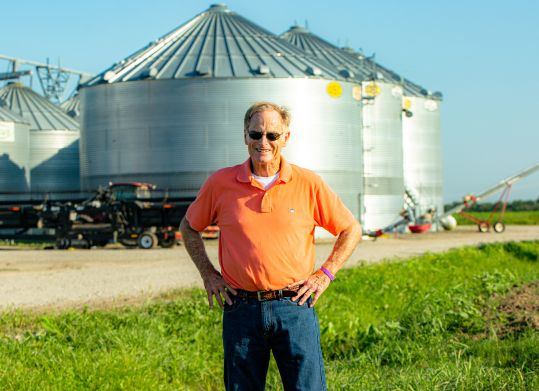

<!DOCTYPE html>

<html>

<head>

    <title>AgriCapture Inc</title>
    <meta charset="utf-8" />
    <meta name="viewport" content="width=device-width, initial-scale=1.0">


      <link rel="stylesheet" href="https://unpkg.com/leaflet@1.3.4/dist/leaflet.css" crossorigin=""/>
      <script src="https://unpkg.com/leaflet@1.3.4/dist/leaflet.js" crossorigin=""></script>   
      <script src="https://dsps.lib.uiowa.edu/placing/public/leafletSlider-1.0.2/leaflet.SliderControl.min.js"></script>
      <script src="https://dsps.lib.uiowa.edu/placing/public/fuse-1.2.1/fuse.min.js"></script>
      <script src="https://dsps.lib.uiowa.edu/placing/public/leafletFuseSearch-noVersion/leafletfuse.js"></script>
      <link rel="stylesheet" href="https://dsps.lib.uiowa.edu/placing/public/leafletFuseSearch-noVersion/leafletfuse.css" type="text/css"/>
      <script src="https://code.jquery.com/jquery-1.9.1.min.js"></script>
      <script src="https://code.jquery.com/ui/1.9.2/jquery-ui.js"></script>
      <link rel="stylesheet" href="https://code.jquery.com/ui/1.9.2/themes/base/jquery-ui.css" type="text/css">
      <script src="https://dsps.lib.uiowa.edu/placing/public/jqueryUiTouchPunch-0.2.2/jquery.ui.touch-punch.min.js"></script>
      <script src="https://klee12.github.io/dataTest/RiceFarmers.geojson"></script>

         <link rel="stylesheet" type="text/css" href="https://dsps.lib.uiowa.edu/placing/css/style.css">
         <link rel="stylesheet" type="text/css" href="https://dsps.lib.uiowa.edu/placing/css/navwrap.css">
  </head>
  
  
  <body>

    <div id="map" style="width: 100%; height: 700px"></div>

<script>
 

        var basemap =  L.tileLayer('https://api.maptiler.com/tiles/satellite-v2/{z}/{x}/{y}.jpg?key=VIgRA9HvUDuobZZ0dcIL', {
                    attribution: 'Map tiles by <a href="http://stamen.com">Stamen Design</a>, <a href="http://creativecommons.org/licenses/by/3.0">CC BY 3.0</a> &mdash; Map data &copy; <a href="https://www.openstreetmap.org/copyright">OpenStreetMap</a> contributors',
                    subdomains: 'abcd',
                    minZoom: 0,
                    maxZoom: 20,
                    ext: 'png'
                });

        

      var map = L.map('map', {
         center: [35.1495, -90.0490],
         zoom: 8,
         layers: [basemap]
         });

 

      // onEachFeature generate a popup for each location

      var onEachFeature = function(feature, layer) {
        if (feature.properties) {
          var prop = feature.properties;
          // make a cool little html popup with properties
            var popup = '<h3>'+' Farm '+prop['FARM_NAME']+'</h3>'+'<strong>State </strong>'+prop['STATE']+' '+'<br><strong>Acreage:    </strong>'+prop['Acreage']+'<br><strong>CF_Practic    </strong>'+prop['CF_Practic']+'<br><br><i> Note: Data provide by AgriCapture Inc. </i>';
            // add known info about event to the description

         

          // you must create a layer property on each feature or else

          // the search results won't know where the item is on the map / layer

          feature.layer = layer;
          layer.bindPopup(popup, {maxWidth: "400"});

        }

      }; // end onEachFeature
	  
	// var marker = L.marker([ 35.72,-90.02])
	 //.addTo(map)
	 //.bindPopup("<h1>test</h1>")
	 //.openPopup();
	    


	

 var firstlayer = L.geoJson(RiceFarmers, {
         //add popups
        onEachFeature: onEachFeature,
        style: function(feature) {
		 switch (feature.properties.OPERATOR_NAME){
            case '3M Planting Company': return {color: "#2548b0" };
			case 'Beaver Bayou Partnership':   return {color: "##38f2b8"};
			case 'Carter Coppage Ellis': return {color: "##ab921f"};
            case 'Chuck Day Farms Partnership':   return {color: "#d835dc"};
			case 'David Brooks Griffin': return {color: "#4e3601"};
            case 'Deline Farms Partnership':   return {color: "#9756c5"};
			case 'Deline Farms South': return {color: "#d20553"};
            case 'Double G Farming':   return {color: "#fa42b7"};
			case 'Fogleman Farms': return {color: "#cca21f"};
            case 'Griffin Farms Partnership':   return {color: "#f24e49"};
			case 'Griffin Farms South': return {color: "#2192e9"};
            case 'Jacob Ayecock':   return {color: "#fc7b06"};
			case 'Janus Farming Company Inc': return {color: "#fc7b06"};
            case 'Jarret Lawfield':   return {color: "#a16ece"};
		    case 'Larry Mcclendon Farms J V':   return {color: "#9e4428"};
		    case 'Marthinus Swart':   return {color: "#3538a7"};
		    case 'Matthew Moreland':   return {color: "#e08a18"};
			case 'Medford Farm Partnership': return {color: "#f3fa76"};
            case 'Moon Lake Farms Of Arkansas 2':   return {color: "#005a3f"};
			case 'N & K Reed Farms': return {color: "#66a83e"};
            case 'R And J Farms Ptrsp':   return {color: "#042822"};
			case 'Ratio Farms': return {color: "#bacdbe"};
            case 'Rickey Harris':   return {color: "#53e7fe"};
			case 'Soudan Farming Co': return {color: "#6c18d8"};
            case 'Stephens Partnership':   return {color: "#550f04"};
			case 'Sunset Farms': return {color: "#bacdbe"};
            case 'Tmg Farms':   return {color: "#fc7b06"};
			case 'Tucker Farms Ptr': return {color: "#3538a7"};
            case 'Vince And Susan Hillman':   return {color: "#cca21f"};
			case 'W Paul Sellers Dba Pbs Farms': return {color: "#005a3f"};
            case 'Wesson Farms, Inc':   return {color: "#f24e49"};
		    case 'William Bart Turner':   return {color: "#66a83e"};
		
			}
		  }
      }).addTo(map);
	  
		
		
		
	  
	 
		L.control.scale({
			metric:true,
			imperial: true,
			position: 'topright'
			}).addTo(map);
			
		L.Control.Watermark = L.Control.extend({
			onAdd: function(map) {
		 
 		   var img = L.DomUtil.create('img');
			img.src = 'aglogo.png';
			img.style.width = '200px';
			return img;
            },
			onRemove:function(map){},
			});
			L.control.watermark = function(opts){
			return new L.Control.Watermark(opts);
			}
        L.control.watermark({position:'bottomright'}).addTo(map);
		
		
		
		
	var Icon = L.icon({
    iconUrl: 'cuteman.png',
    iconSize:     [100, 100], // size of the icon
    iconAnchor:   [24.5, 94], // point of the icon which will correspond to marker's location
    popupAnchor:  [28, -70] // point from which the popup should open relative to the iconAnchor
		});
		
		
	var marker1 = L.marker([35.72,-90.02], {icon: Icon})
	.addTo(map)
	.bindPopup("<h2>Steve Mckaskle </h2>  <p>Steve McKaskle started farming in 1973 as a fifth-generation farmer. Steve wholeheartedly believes in regenerative farming and the benefits it will bring to the global agriculture industry. He has developed groundbreaking cultivation techniques with the USDA and secured relationships with notable companies such as Chipotle, Whole Foods Market, United Natural Foods, and KeHE. McKaskle Family Farms operates on over 3,000 acres cultivating a variety of crops including: popcorn, Basmati and long grain rice varieties, soybeans, corn, cotton, and oats. </p> <p> Total Farm: N/A. acers <br> Total Rice Acer: 4000 acers  <br> Total Climate Friendly Practice: 1000 acers <br>Climate Friendly Practice: Row Rice <br>Current Inventory: N/A' <br> Avaiable Inventory Start Nov 2022:1350000 <br>Rice prie/Pound: N/A.  </p> ", {maxWidth: "auto"});	
	
	
		
		
		
		
		
		

//var imageUrl = 'http://www.lib.utexas.edu/maps/historical/newark_nj_1922.jpg',
  //  imageBounds = [[40.712216, -74.22655], [40.773941, -74.12544]];

//L.imageOverlay(imageUrl, imageBounds).addTo(map);

 	
		
     // var timelineLayer = L.geoJson(bringData, {
       // onEachFeature: onEachFeature,
        //pointToLayer: function(feature, latlng) {
          //return L.circleMarker(latlng, orangeCircleMarkers);
        //}
      //});

 

      // now make a timeline layer that the slider can manipulate

      //var searchLayer = L.geoJson(SEP_FARMS, {
       // onEachFeature: onEachFeature,
       // style: function(feature, latlng) {
        //  return L.circleMarker(latlng, greenCircleMarkers);
       // }
      //});
	  
	  
	//  var sliderControl = L.control.sliderControl({
      //    position: "topright",
        //  layer: timelineLayer,
         // range: true // gives it a bottom and a top slider
      //});
 
//      map.addControl(sliderControl);
  //    sliderControl.startSlider(); // initialize


    //  var searchOptions = {
      //  position: 'topleft',
       // title: 'Search',
        //placeholder: 'Example: Farm Name',
       // maxResultLength: 10,
        //caseSensitive: false,
        //showInvisibleFeatures: true,
        //layerToToggle: searchLayer,
        //threshold: 0.5, // default is .5, will match imperfect results
        //showResultFct: function(Feature, container) {
         // props = Feature.properties;
         // var name = L.DomUtil.create('b', null, container);
         // name.innerHTML = props.STATE;
         // container.appendChild(L.DomUtil.create('br', null, container));
 

          //var cat = props.name ? props.name : props.name ,
            //  info = cat;
          //container.appendChild(document.createTextNode(info));
        //}
      //};

      //var searchControl = L.control.fuseSearch(searchOptions);
      //map.addControl(searchControl);
      //searchControl.indexFeatures(SEP_FARMS,['STATE']);
 

      //displayFeatures(SEP_FARMS, searchLayer);

 
      //function displayFeatures(features, layer) {
       // var popup = L.DomUtil.create('div', 'tiny-popup', map.getContainer());
        //for (var id in features) {
         // var feat = features[id];
          //var cat = feat.properties.categorie;
          //var site = L.geoJson(feat, {
           // pointToLayer: function(feature, latLng) {
            //  var marker = L.marker(latLng, {
              //          icon: orangeCircleMarkers,
               // keyboard: false,
               // riseOnHover: true
              //});
              //if (! L.touch) {
               // marker.on('mouseover', function(position) {
               // }).on('mouseout', function(position) {
                //  L.DomUtil.removeClass(popup, 'visible');
                //});
             // }
              //return marker;
            //},
           // onEachFeature: onEachFeature
          //});
          //if (layer !== undefined) {
           //   layer.addLayer(site);
         // }
        //}
        //return layer;
      //};

                //    var overlays = {
                  //  "People occupation": firstlayer
         //};

              //      var baseMaps = {
                  //  "Historic": basemap
            //        };
     
     //    L.control.layers(overlays, baseMaps, {collapsed:false}).addTo(map);
         
	

//var marker, popupContent;

//for (var i = 0; i < 1; i += 1) {
   // marker = L.marker([48.85, 2.35]).addTo(map);
  //popupContent = document.createElement("img");
  //popupContent.onload = function () {
   // marker.openPopup();
  //};
 // popupContent.src = "https://upload.wikimedia.org/wikipedia/commons/thumb/7/75/Stack_Exchange_logo_and_wordmark.svg/375px-Stack_Exchange_logo_and_wordmark.svg.png";
  //popupContent = '';
  //marker.bindPopup(popupContent, {
   // maxWidth: "auto"
  //});
//}

//marker.openPopup();
		
		 
    </script>

  </body>

</html>
